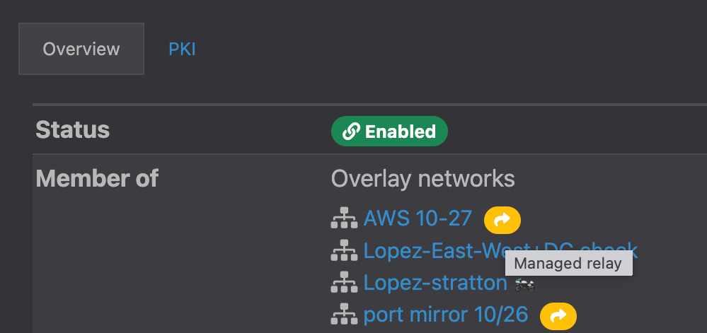

Release Notes v3.1.2
Release Date: November 30, 2022
Update Considerations
This update addresses the following issues:
- Map server deadlock.
- Remote logging failure.
- M2 chatter reduction.
- JsonRPC server deadlock.
- MAC address validation.
New Features
- New airsh command allows a user to see the port group IDs using
conf net list, see Airshell (airsh) Command Reference. - On an Airwall details view you can now see which overlay networks use managed relay rules. 
Downloads
For firmware and software downloads for this version, see 3.1.2 firmware and software.
Deprecations
Deprecating system setting for Preferred Airwall agent version. This setting indicated what version of the Airwall agent would be linked from the remote user access portal. Beginning in v3.2, only the most recent version of each Airwall agent will be available. Customers that want to distribute older versions of the Airwall agent can still make those available to their users.
Fixes
| ID | Applies to | Description |
|---|---|---|
| DEV-18305 | Conductor | Fixed an issue where Conductor could not verify the certificate of some OpenID Connect providers. |
| DEV-18291 | Conductor | Fixed an issue where a custom MAP port would revert back to the original 8096 port on upgrade. |
| DEV-18273 | Conductor | Fixed an issue where both IPs of NATed devices may not display correctly when navigating directly to the device. |
| DEV-18254 | Conductor | Fixed a bug that could cause a deadlock in the map server. |
| DEV-18252 | Conductor | Large custom logos should be properly resized on the login screen. |
| DEV-18251 | Common | zlib upgraded to 1.2.12. |
| DEV-18250 | Common | util-linux upgraded to 2.38. |
| DEV-18249 | Conductor | Fixed an issue where the managed Airwall name would sometimes be blank for Airwall invites. |
| DEV-18239 | BaseOS | Upgrade lib c-ares to 1.18.1. |
| DEV-18235 | Conductor | Fixed an issue that caused remote logging to fail for the Conductor. |
| DEV-18220 | Conductor | Fixed an issue where overlay managed relay rules might not include needed bypass gateways. |
| DEV-18216 | Conductor | Fixed an issue causing a JS exception when a user tried to access a context menu in the overlay graph after deleting a device from the table on the right. |
| DEV-18199 | Conductor | Reduced m2 chatter when enabling intrusion prevention |
| DEV-18179 | Conductor | Fixed an issue where some details about deleted objects were not serialized when using bulk delete. |
| DEV-18176 | Conductor | Fixed coloring issue with diagnostic report in dark mode. |
| DEV-18173 | Conductor | Fixed an issue where a new user that is invited to Conductor and sets their password cannot request an API token without logging out and logging back in. |
| DEV-18167 | Conductor | Fixed issue where device MAC addresses were not properly validated. |
| DEV-18160 | Conductor | Network devices are no longer included in the source or destination options as they are not supported. |
| DEV-18157 | Conductor | Fixed coloring issue with traceroute results in dark mode. |
| DEV-18156 | Conductor | Fixed an issue where the same tag could be added and removed in the "edit tags" dialog resulting in the tag being added. |
| DEV-18153 | Conductor | Fixed an issue where using the quick switcher to switch between overlays would cause the overlay graph layout to be lost. |
| DEV-18142 | Conductor | Fixed an issue where the default values for date range access windows were not being used. |
| DEV-18137 | Conductor | Fixed an issue where the network membership dialog for a people group could be entirely blank when the Conductor contains no overlays. |
| DEV-18134 | Hipswitch | Fixed deadlock in JsonRPC Server. |
| DEV-18113 | Conductor | Fixed an issue where references to revoked or factory reset Airwalls could be left in bypass gateway configuration when they should not be. |
| DEV-18106 | API, Conductor | Fixed the API documentation for api/v1/hipservices/revoke (bulk revoke). |
| DEV-18102 | HIPswitch | Fixed an issue that caused the IDS not to start or reboot in certain configurations. |
| DEV-18044 | airsh | Fixed issue with airsh status dnscache command when a unhandled DNS record type is present in the cache. |
| DEV-18021 | Conductor | Fixed an issue where version numbers and model names were out of order in the Airwall Status report. |
| DEV-17998 | Conductor | Fixed an issue where reports that start in the future could be run. |
| DEV-17853 | Conductor | Fixed an issue that required a refresh for the UI to display that an Airwall's ability to be a bypass gateway has been disabled. The change still took effect, but the browser needed to be refreshed for it to display properly to the user. |
| DEV-16525 | Cloud, Conductor | Fixed an issue where, with individual route injection for cloud Airwalls enabled, devices added to groups that already have policy with a cloud Airwall did not correctly update the cloud provider's routing tables. |
Known Issues
| ID | Applies to | Description |
|---|---|---|
| DEV-18144 | Conductor | The Connectivity Checker. |
| DEV-17648 | Cloud, Conductor | If you use unrecognized credentials when calling jobs on a cloud Airwall Gateway, the Conductor sends multiple error messages when it tries to call route injection and validate cloud attributes. Workaround -- Make sure your cloud credentials are correct and update the credentials on the "Cloud providers" page under Conductor settings. |
| DEV-17648 | HIPapp-Linux | Many Airshell functions (including changing log level) are non-functional until you have configured and licensed your Conductor. |
| DEV-17582 | HIPswitch | Currently DNS bypass is not HA aware, on a HA failover the contents of the DNS cache are lost and traffic will be blocked until the protected device queries for the DNS name again. |
| DEV-17263 | Conductor |
If you fix a conflict in a smart device group by changing the IP of one of the conflicted devices, sometimes the change in IP does not result in the device being removed from the group and the change is not propagated to the Airwall Gateway. Workaround – Fully remove the device from the smart device group and then add it back again. |
| DEV-16431 | Conductor | When specifying a port mirror destination IP address, ensure that it doesn't conflict with any of the Airwall Gateway's local device IPs |
| DEV-16397 | Conductor | If you change the LSI prefix and have port mirroring configured, you need to either reboot the Conductor, or go to and select Restart metadata cache to update the LSI prefix. |
| DEV-16068 | Amazon Web Services Conductor | To enable enhanced networking for a cloud Amazon Web Services Airwall Gateway or Conductor, use the custom images instead of the marketplace image. |
| DEV-16067 | Cloud, Conductor, Airwall Gateways | If you are adding a new interface to an existing cloud Airwall Gateway, you must set the source and destination check to false (see your cloud provider for the terminology they use for source and destination checks). |
| DEV-16059 | Airwall Gateways | When HA-pairing two Airwall Gateways that do not have the HA link plugged in correctly, the Conductor displays no actionable error message and the HA setup never completes. |
| DEV-15982 | Conductor | Traffic stats reporting graphs generally show a smooth curve between data points. However, over time the graph can show up with sharper angles. The data is still correct, but this is a known issue with the graphing library used by the Conductor. |
| DEV-15945 | Airwall Gateways | If you configure port mirroring using a remote destination local device, GRE/ERSPAN traffic from remote Airwall Gateways will arrive with a source IP in the LSI prefix (defaults to 1.0.0.0/8). |
| DEV-15923 | Airwall Gateways | When you run Check secure tunnels on a v3.0 Airwall Gateway, the check falsely reports a bad tunnel status for any peer airwall running a firmware version that is v2.2.8 or lower. |
| DEV-15887 | Airwall Gateways | You cannot currently add VLAN interfaces to the Ruggedcom platform. |
| DEV-15808 | Google Cloud Airwall Gateways | Google Cloud Airwall Gateways with the same VM name have the same device serial number, which
can result in a failure when you make a license request in the Conductor. Workaround – In Google Cloud, use unique deployment names (VM names) for Airwall Gateways. |
| DEV-15572 | Airwall Gateways | If you do not specify a gateway in the DHCP server configuration,
the DHCP client cannot configure a default
gateway. Workaround – Unless you want to configure a single isolated subnet, always specify a gateway. For example, a subnet for networked PDUs that should not have any outside connectivity aside from remote access through an Airwall Gateway, and used in conjunction with SNAT over the overlay port group. See https://tempered.force.com/TemperedSupportCenter/s/article/DHCP-server-isn-t-serving-as-a-gateway. |
| DEV-15219 | Cellular 110g Airwall Gateways | The Airwall Gateway 110g does not work on the Bell Mobility (Canada) cellular provider because they require the use of a http/https proxy. |
| DEV-15031 | Airwall Gateways | Remote syslog over TLS doesn't work when using keys stored in TPM. |
| DEV-14860 | Conductor | Airwall Gateways on older firmware (pre v2.2.0) may send passively-discovered device events to the Conductor even when the feature is off. |
| DEV-14835 | Conductor | Airwall Gateway 150 serial numbers look like exponentiated numbers to Windows Excel, so the column displaying the Serial number shows xxxEyyy instead of the full serial number. |
| DEV-14736 | Cellular Airwall Gateways | Cellular details may display as "unavailable" on the first boot
after you update anAirwall Gateway. The cellular connections are not affected. Workaround – Reboot the Airwall Gateway again to correctly display the cellular details. |
| DEV-14726 | Conductor | If you are viewing an Android Airwall Agent
Ports tab and the Airwall Agent changes how it is connected to the Conductor (for example, from WiFi to cellular), the display does not update
correctly. Workaround – Refresh the page. |
| DEV-14610 | Conductor | After changing the Reporting traffic stats reporting time, the
CPU graph does not display. Workaround – Refresh your browser page. |
| DEV-14584 | Cellular Airwall Gateways | Hot-swapping the SIM on an Airwall Gateway 110 with firmware version v2.2.11 may not work.
Workaround – Reboot the Airwall Gateway after installing a new SIM card. |
| DEV-14551 | Conductor | The Android Airwall Agent lets you press the Edit Settings button on the Ports page; however, submitting any changes to the page results in an error message. |
| DEV-14426 | Conductor, Airwall Gateways | Bypass destinations with a hostname do not show device activity in the Conductor. |
| DEV-14308 | OpenHIP | Initial packets are dropped while building a new tunnel to a new peer Airwall Gateway. |
| DEV-14223 | Google Cloud | Add an overlay IP to agent in order to talk to device behind Google 300v. |
| DEV-14218 | Airwall Gateways | NAT broadcast applied to traffic between ports within a single port group. Use an external switch if you need to connect multiple devices to a single port group and use the NAT broadcast feature and require IP broadcast un-NATed between those local devices. |
| DEV-14015 | OpenHIP | If an Airwall Relay is also used as a bypass gateway, Airwall Edge Services behind the relay are not able to use that relay.
Workaround – Deploy multiple relays so at least one relay is usable by each pair of Airwall Edge Services that need to communicate. |
| DEV-13775 | Azure Cloud Airwall Gateways | The Conductor might rarely give a "Net::ReadTimeout" error when you try to deploy an Azure Airwall Gateway 300v or server. This error doesn't indicate that the deployment has failed. If you get this error message, go to Azure portal and check the actual deployment result. |
| DEV-13650 | Conductor | SoIP device activity is not being reported on an Airwall Gateway Local Devices tab. |
| DEV-13640 | Conductor | Airwall Relay diagnostics do not work on a Standby Conductor. |
| DEV-13633 | Conductor | A standby Conductor shows available firmware downloads, but they cannot be
downloaded. Workaround – Download firmware from the active Conductor. |
| DEV-13620 | Conductor | In , the failover ping occurs only every "ping rate" + "ping timeout" seconds, somewhat unexpectedly. |
| DEV-13607 | Conductor, Airwall Gateways | Creating a link failover group () does not apply the settings to any port groups. You must also assign the failover group to port groups on the Ports page. |
| DEV-13588 | Conductor | Opening the Conductor on Internet Explorer 11 can be very slow for medium to large
deployments. Workaround – Use the latest version of Chrome, Firefox, or Edge instead. |
| DEV-13531 | Cloud Conductor | Automatically creating Cloud HA Conductors only works if you use the same cloud provider for both active and
standby Conductors. For example, AWS HA Active and AWS HA
Standby. Workaround – You can manually set up different cloud providers as HA pair Conductors. |
| DEV-13474 | Airwall Gateways | If you configure multiple overlay port groups with the same overlay IP subnet (same or different IP addresses) and then create a local device equal to the entire subnet with port affinity set, it may not lead to the expected result. |
| DEV-13331 | Alibaba Cloud Airwall Gateways | The Alibaba Cloud Conductor system time is incorrect. Workaround – Change the Conductor system time to browser time: In Conductor Settings, under System time, select Edit Settings, select Set browser time, and then select Update Settings. |
| DEV-13195 | Conductor, Airwall Gateways | When you upgrade a Cellular Airwall Gateway-150 from 2.2.3 to 2.2.5, the cellular details all become
"Unavailable." Workaround – Reboot and the details return. |
| DEV-13194 | Conductor | for an Airwall Gateway fails in Internet Explorer 11 if one of the devices is defined as
a CIDR. Workaround – Use one of the latest versions of Chrome, Firefox, Safari or Edge. |
| DEV-10590 | Cloud Airwall Gateways | The Conductor does not display an error when adding a route that would exceed the maximum number of allowed routes in the cloud provider. |
| DEV-10039 | Airwall Gateways | An Airwall Gateway-150 can show "could not detect attached switch" intermittently. |
| DEV-9546 | Airwall Gateways, Airwall Gateways 150 | The Airwall Gateway-150 serial connection has an intermittent issue when large amounts of data are sent over the console. |